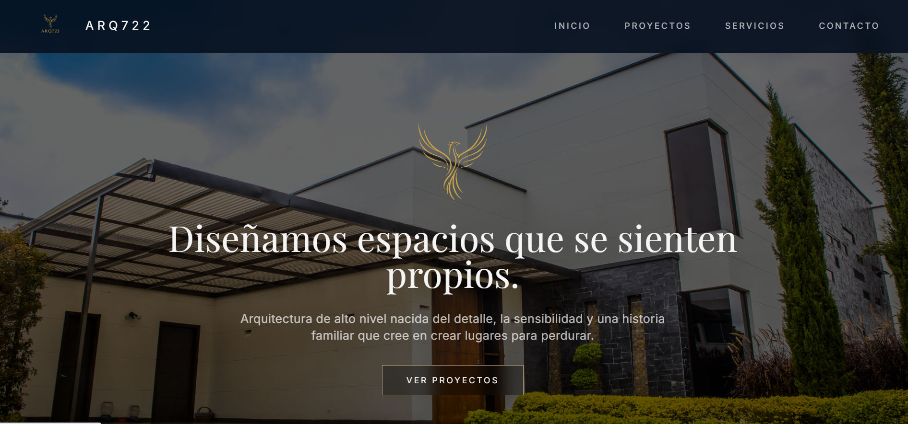
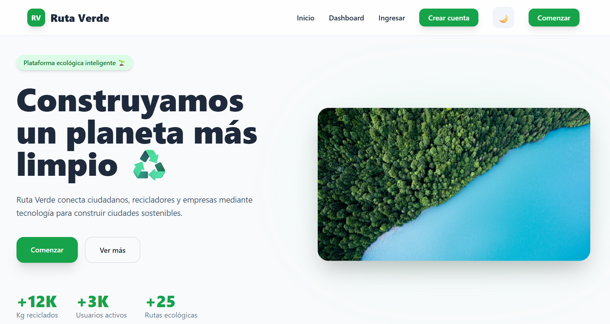

ARQ722
Proyecto enfocado en arquitectura premium y presencia digital moderna. Diseñado para transmitir elegancia, minimalismo y sofisticación visual mediante una experiencia cinematográfica y profesional.
Ver proyectoAzul Celeste
Plataforma tecnológica orientada a la gestión clínica y experiencias digitales enfocadas en bienestar humano, combinando funcionalidad, accesibilidad y diseño moderno.
Ver proyecto

Ruta Verde
Plataforma inteligente enfocada en reciclaje, sostenibilidad urbana e innovación ambiental, diseñada para promover soluciones tecnológicas modernas enfocadas en el futuro ecológico.
Ver proyecto